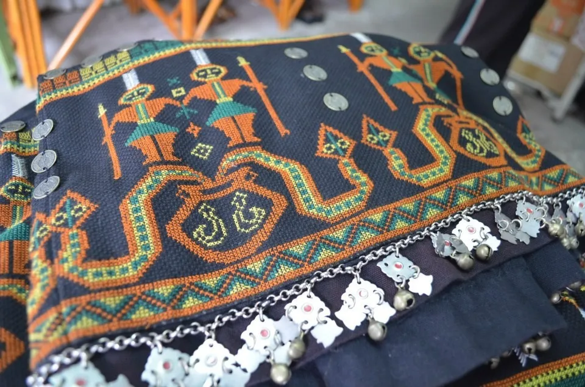
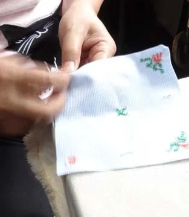
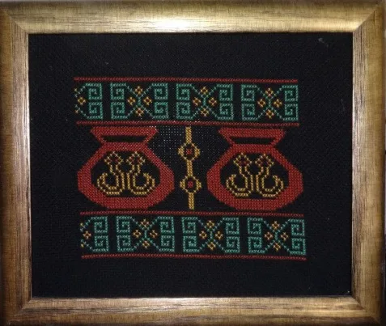
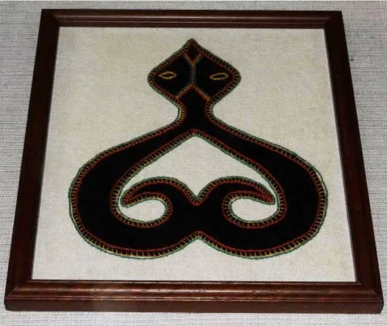
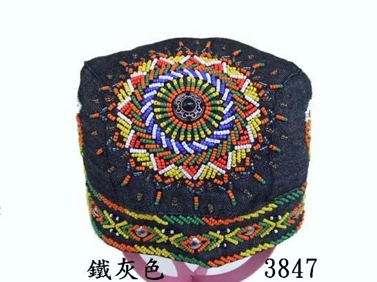
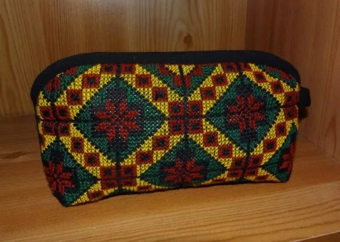
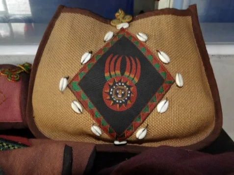

“Culture must not be lost”
I visited and interviewed craftspeople to understand how Rukai and Paiwan embroidery is made, taught, and passed on.
- Places
- Maolin, Kaohsiung · Puzi, Chiayi · Pingtung
- Craft
- Indigenous embroidery
- My role
- Field research · Interviews · Documentation
- Team
- Five contributors

Before the patterns disappear
Our team spent a year documenting traditional embroidery in southern Taiwan. Many crafts were fading: young people moved away, and much of the knowledge lived only in the memories of a few masters.
We visited the Rukai community in Maolin, Kaohsiung, studied the stitches and materials their grandmothers used, and surveyed the Puzi Embroidery Culture Museum in Chiayi to see how a local museum keeps a craft alive.

Learning from a Paiwan master
The heart of our research was a long interview with a Paiwan master artisan. She learned embroidery from her grandmother, who raised her and passed on the stories of their people while they sewed.
Culture must not be lost.Her grandmother’s words, which she still repeats
For more than ten years she sold clothes at night markets to support her family. But watching fewer people wear traditional clothing, even at important ceremonies, she remembered those words. She went home, opened her own workshop, and began teaching embroidery and natural plant dyeing to anyone who wanted to learn.
Every pattern carries a story
In Paiwan and Rukai embroidery, nothing is only decoration. The hundred-pacer snake protects; the sun and the ancestral jar carry family history. Cross-stitch, appliqué, chain stitch and beadwork are combined with shells, bells and silver discs.





What we made
- A written record of the master’s life story and oral history
- A stitch guide explaining Rukai and Paiwan techniques, step by step
- A field survey of how a local museum preserves and teaches embroidery